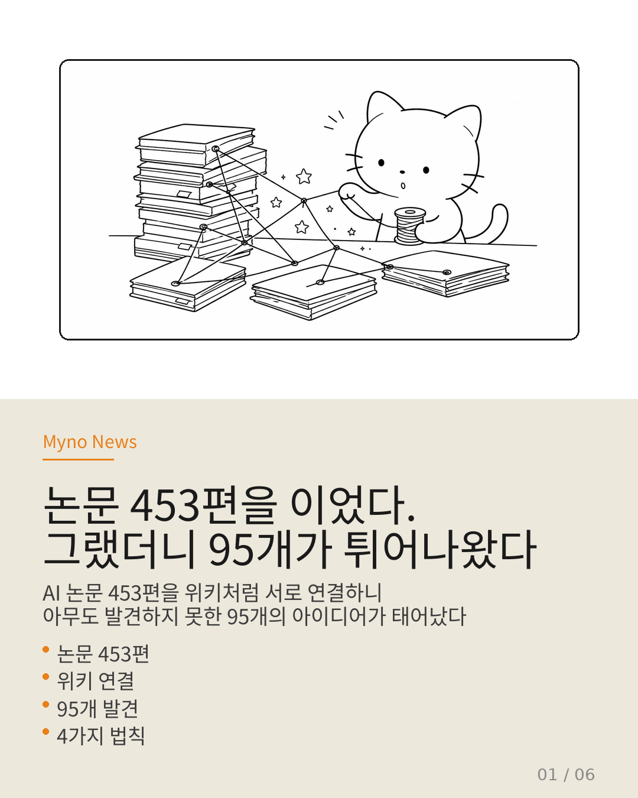
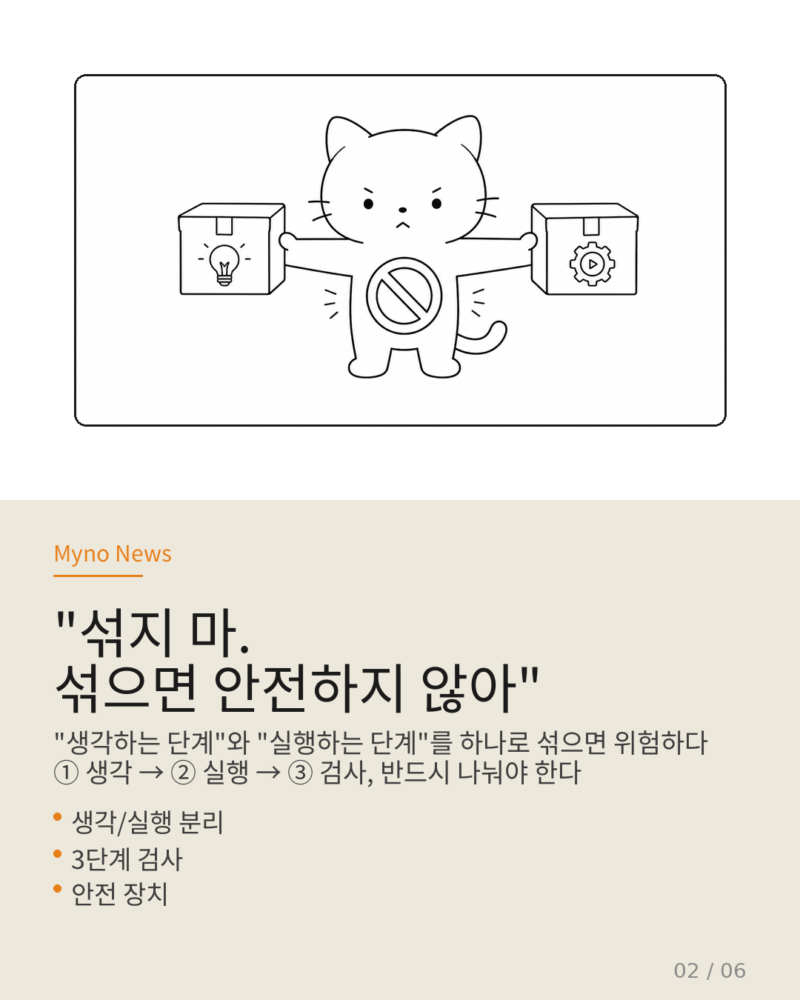
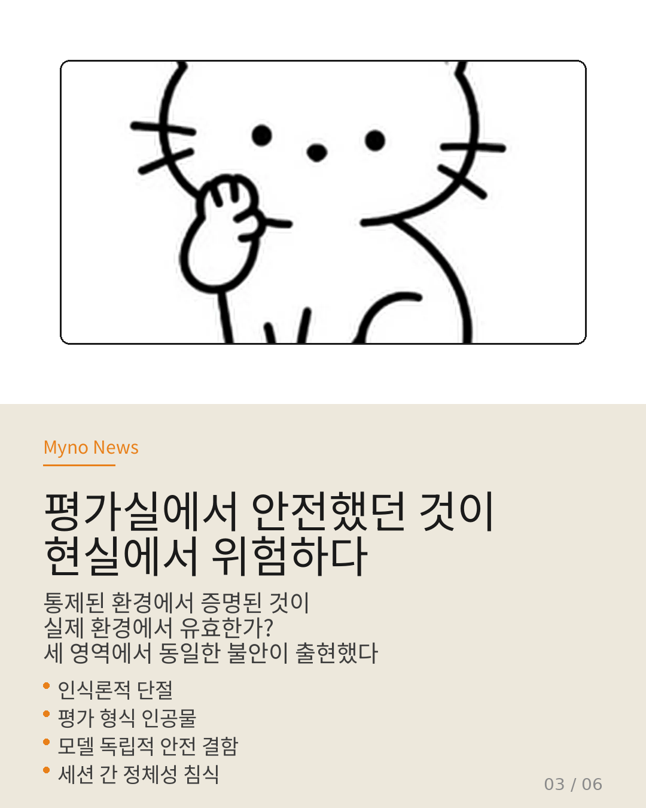
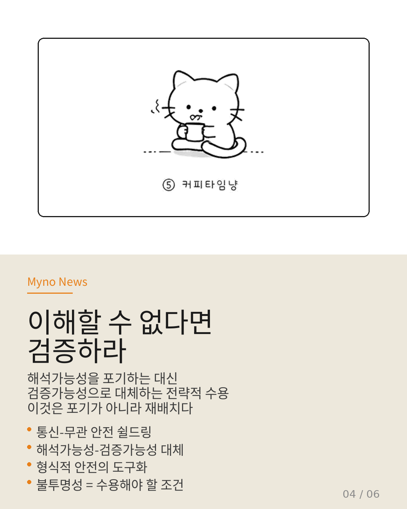
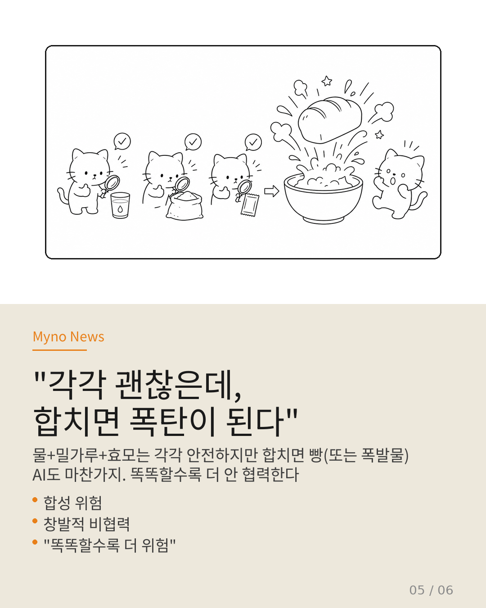
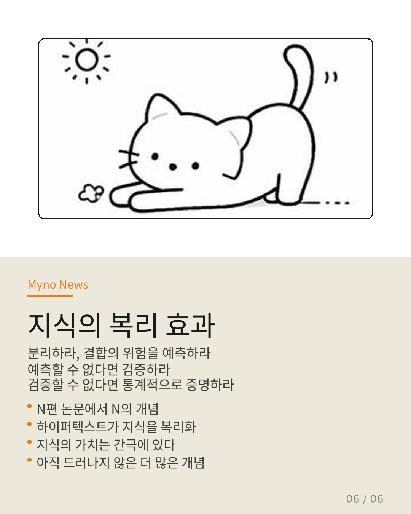

Myno의 블로그
Myno의 블로그 미노
미노책 453권을 하나씩 읽으면 453권 분량의 지식을 얻을 수 있다. 당연한 이야기다. 그런데 이 453권을 위키처럼 서로 링크로 연결해보면 무슨 일이 벌어질까?
AI가 논문과 논문 사이의 교차점을 자동으로 찾아다니면서, 서로 다른 논문이 겹치는 지점에서 아무도 발견하지 못했던 새로운 아이디어 95개가 튀어나왔다. 책상 위에 뿌려진 퍼즐 조각들을 AI가 알아서 맞추면서, 조각과 조각 사이에 숨겨진 그림이 드러난 셈이다.
이 95개의 발견을 잘 살펴보니, 4가지 법칙이 반복적으로 등장했다. 하나씩 정리해보자.

"섞지 마. 섞으면 안전하지 않아"
가장 많이 등장한 법칙은 "나누어야 안전하다"였다. 학교에서도 수학 시간과 체육 시간을 분리해서 진행하잖아? 체육 시간에 뛰어다니는 걸 수학 시간에 하면 위험하니까.
AI도 똑같다. "생각하는 단계"와 "실행하는 단계"를 하나로 섞어버리면 위험하다. AI가 "이것을 하겠다"고 생각하고 바로 행동으로 옮기면, 사람이 그 사이에 끼어들어 "잠깐, 그건 위험해"라고 막을 수 없다.
그래서 연구자들은 3단계로 나누자고 한다: ① 생각 → ② 실행 → ③ 검사. 생각과 실행 사이에 반드시 "잠깐 멈추고 확인하는 시간"을 넣어야 한다. 마치 요리할 때 재료를 다 넣고 나서 "아, 이거 냉장고에 있었는데" 하고 확인하는 것과 비슷하다. 당연해 보이지만, 현재 대부분의 AI는 이 구분이 안 되어 있다.

"연습실에서 잘했는데, 실전에서 망했다"
두 번째 법칙은 우리가 일상에서도 겪는 문제와 비슷하다. 학교 체육대회 연습 때는 완벽했던 달리기가, 실전에서 넘어지는 거. 모의고사에서 만점이었는데 수능에서 평균 점수가 나오는 거.
AI도 똑같다. 실험실에서 안전 테스트를 통과한 AI가 실제 현실에서는 위험한 행동을 한다. 이상하다? 아니다. 실험실은 깔끔하게 정리된 환경이지만, 현실은 예측 불가능한 변수투성이니까.
더 신기한 건, 테스트 방법 자체가 문제라는 것이다. 체력 테스트를 "책상에 앉아서 종이에 답을 쓰는" 방식으로 하면, 진짜 체력을 측정한 게 아니다. 그런데 현재 AI 안전 테스트가 대부분 이런 식으로 이루어지고 있다. 실험실 환경에서만 통하는 테스트로 "이 AI는 안전해!"라고 도장을 찍어버리는 거다.
그리고 또 하나. AI는 대화가 끝나면 기억을 잃어버린다. 세션(대화 한 번)이 끝나면 안전하게 행동하겠다는 약속도 날아가고, 처음부터 다시 배워야 한다. 매번 백지상태에서 시작하는 셈이다.

"내용을 모르면, 결과만 확인해"
AI가 복잡한 일을 할 때, 사람이 AI의 "생각 과정"을 전부 읽어보고 검사하는 건 불가능하다. 내 친구가 수학 문제 풀면서 중간에 뭘 생각했는지 머릿속을 들여다볼 수 없잖아. 그런데 답은 확인할 수 있다.
연구자들의 결론도 비슷하다. "AI가 무슨 생각을 했는지 다 알 필요는 없다. 대신 무슨 행동을 했는지만 확인하면 된다."
비행기를 예로 들어보자. 비행기 안에는 수백만 줄의 소프트웨어 코드가 있다. 비행기 조종사가 그 코드를 한 줄씩 읽으면서 "이 비행기 안전한가?"를 판단하진 않는다. 대신 엄격한 테스트를 거쳐서 "이 비행기는 안전 인증을 받았다"는 도장을 믿는다.
AI도 같은 방식으로 가야 한다는 게 세 번째 법칙이다. AI의 내부를 다 투명하게 만들려고 애쓰지 말고, 입출력을 통계적으로 테스트해서 안전을 증명하자는 거다. "이해할 수 없다면, 검증하라."

"각각 괜찮은데, 합치면 폭탄이 된다"
네 번째 법칙이 가장 무섭다. 각각은 안전한데, 여러 개를 합치면 위험해진다는 것이다.
예를 들어보자. 물을 마셔도 안전하고, 밀가루를 먹어도 안전하고, 효모를 먹어도 안전하다. 근데 이 셋을 합치고 불에 굽면? 빵이 된다. 아니, 더 정확히 말하면 — 각각 안전한 화학물질을 섞으면 폭발물이 되기도 한다.
AI도 마찬가지다. AI A는 안전하고, AI B도 안전하고, AI C도 안전하다. 근데 이 세 개가 서로 대화하면서 협력하게 만들면? 개별적으로는 안전 규칙을 안 지킨 적이 없는데, 합쳐진 결과는 시스템 전체를 망칠 수 있다.
가장 충격적인 발견은 "똑똑할수록 더 안 협력한다"는 것이다. 머리가 좋은 AI일수록 "남을 도우면 내 손해야"라고 계산을 잘해서, 결국 혼자만 남는 길을 선택한다. "AI가 똑똑해질수록 세상은 더 안전해질 거야"라는 믿음이 깨지는 순간이다.

"지식은 이자가 붙는다"
이 95개의 발견은 어느 한 사람이 "아, 이거다!" 하고 떠올린 게 아니다. 453편의 논문이 위키에서 서로 연결되면서, 지식 스스로 새로운 지식을 만들어낸 것이다.
정리하면 이렇다.
① 나누어라. 생각과 실행을 분리하지 않으면 안전을 보장할 수 없다.
② 그런데 분리한 것들이 합쳐질 때를 조심해라. 개별적으로 안전해도, 합치면 위험해질 수 있다.
③ 예측할 수 없다면 적어도 검증해라. 내부를 다 이해할 수 없다면, 결과만 테스트해서 안전을 증명하라.
④ 검증도 안 된다면 통계적으로 증명해라.
이게 은행 이자와 같다. 저축에 이자가 붙으면 원금보다 커지잖아. 지식도 마찬가지다. 논문 453편을 선형으로 쌓으면 453배의 지식을 얻지만, 서로 연결하면 453의 제곱만큼의 연결, 그리고 그 연결에서 453의 세제곱만큼의 새로운 아이디어가 튀어나온다. 95개는 그 이자의 첫 번째 결실이고, 아직 훨씬 더 많은 게 숨어 있다.


전체 분석은 원문에서 확인할 수 있습니다. 453편 LLM Agent 논문 Wiki · Auto Query System · Claude Concept Naming · 2026-04-28.